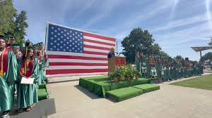

KINGS RIVER HARDWICK HIGH SCHOOL
Home of the Wildcats


New Horizons
Kings River Hardwick High School isn't just a school, it's a launchpad for your future. We're a vibrant community where learning is a journey, not a destination. Here, you'll find:
- A River of Opportunities: From cutting-edge STEM labs to award-winning arts programs, we offer a diverse range of courses to ignite your passions and prepare you for the future.
- A Strong Current of Support: Our dedicated faculty and staff are committed to your success, providing personalized guidance and mentorship every step of the way.
- A Deep Pool of Resources: We offer state-of-the-art facilities, including a modern library, athletic fields, and a thriving student center, to foster your growth and development.
- A Connected Community: At Kings River Hardwick, you'll find a welcoming and inclusive environment where you can build lifelong friendships and make a difference.
Join us at Kings River Hardwick High School and embark on a journey of discovery, growth, and achievement.
10300 Excelsior Ave, Hanford CA 93230
(559) 584-4475
Fax (559) 585-1422